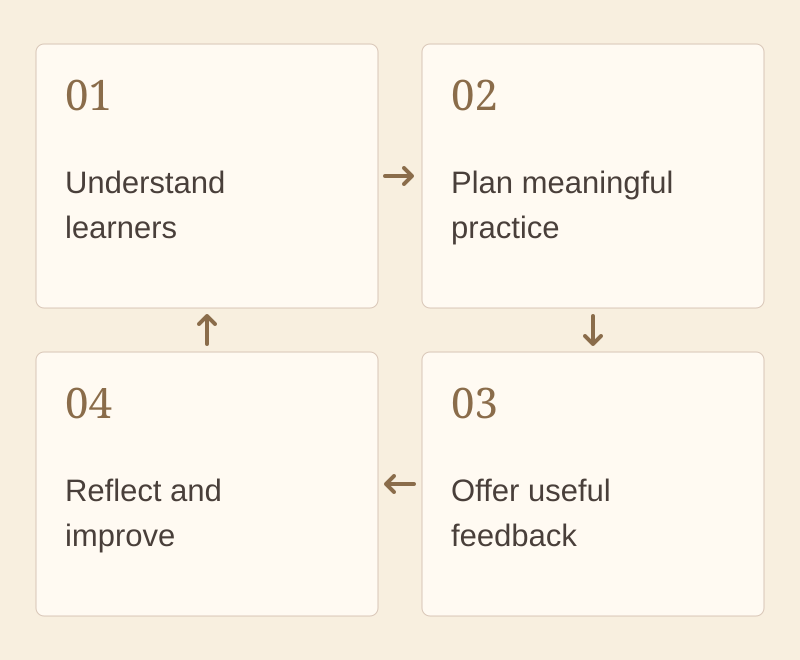

Foundations of Instructional Design and Technology
A completed Foundation assignment will be added here with a short explanation of what it demonstrates and why it matters to my teaching.
01 / Understanding learning
Connecting the foundations of Instructional Design and Technology with my work as a Chinese language educator.
I see instructional design and technology as a thoughtful process of understanding learners, planning learning experiences, and using evidence to improve them. Tools are useful when they serve a clear learning purpose.
In my Chinese classes, I want to connect learning goals with meaningful practice, useful feedback, and opportunities to try again. My studies in IDT help me explore how learning theories can guide these decisions.
This page will bring together my understanding of the field, its history, key scholars, learning theories, and my educational philosophy.

Selected learning
A completed Foundation assignment will be added here with a short explanation of what it demonstrates and why it matters to my teaching.
From ideas to practice
My goal is to choose activities based on what students need to learn, then consider how technology can support that learning. As I add coursework, I will explain how each idea can inform my teaching and future design work.